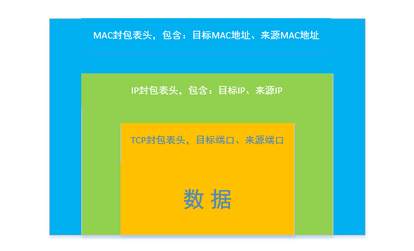
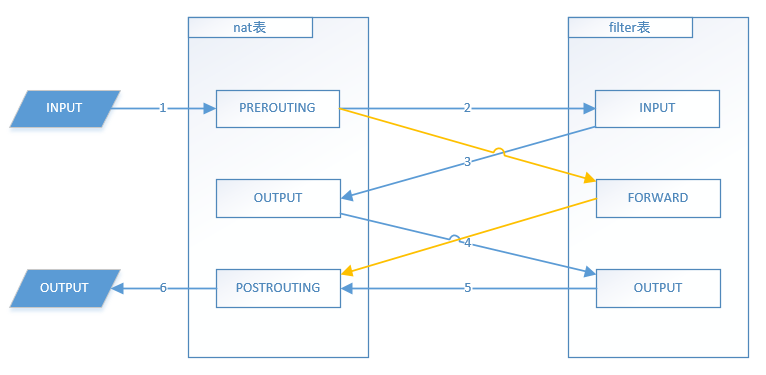

理解iptables#
iptables是Linux系统中的一个命令，也是Linux系统上最常用的防火墙，我们常见的Linux发行版如：CentOS、Ubuntu等都是用iptables作为默认的防火墙，它的强大之处在于它可以控制所有进出系统的数据包。然而，对于初次接触它的人来说，这是个比较难用的命令，不止一个人问过我怎样写一条阻止某IP的命令，因为用它增加一条防火墙规则可能需要写一条很长的命令，如果你没有了解它的工作原理，是写不出一条完整的iptables命令的。本文将剖析它的工作原理并结合例子让你更容易使用它。
前提工作#
要了解iptables就先要了解数据包，这里说的数据包指的是在网络中传输的数据包，又名：报文，如果你了解过TCP协议并写过相关的代码，那么这个词应该不会陌生，如果你不了也没关系，我们这就来谈一谈这个数据包的概念。
其实这个数据包的结构又要用到七层协议的概念，真是一环扣一环，这里我就且当你了解七层协议的概念，如果真的不懂可以先去看看《鸟哥的Linux私房菜》，不过我会尽量讲的通俗一些，希望这不会影响到你阅读下文。
网络传输#
设有两台电脑A与B，A通过网络发送一个文件给B，这个文件会被切分成一个一个的小数据包，每个数据包大小约 1KB 左右，然后转成二进制码按顺序发出去，在网络中以电讯号的形式传输给B，B接收到以后再将这些二进制码转成数据包，最后组合成一个文件。
封包表头#
数据包也称为封包，一个完整的封包，除了我们需要发送的内容以外还包含了很多额外信息，也就是封包表头，主要用来标记这个数据包“从哪里来到哪里去”，在上例中，如果AB相距较远的话，中间一般会经过多个路由器和交换机，当然还有网卡网线等。。。当一个封包经过途中每个设备时，这些设备都需要读出这些封包的表头，才能知道这个封包要去哪里，然后再发给对应的设备，下一个设备收到这个封包也是一样，最终到达了B，可以说封包表头与数据本身同等重要。
封包格式#
实际上，每个数据包外面套了三层封包，每层都是不同的格式，用来给不同的设备读取。如果以TCP作为传输协议，这三层封包分别为：MAC封包、IP封包、TPC封包，用下图来说明它们的关系：  图中只是简单的列出每个封包表头中较关键的信息，其实还有很多其它信息，比如TCP封包表头中的序列号、状态码，每种封包的详细格式，这里就不展开说明了，不然的话就有点跑题了。如果想深入了解的话网上有很多相关资料。
iptables中的表（table）#
终于说到正点了，，iptables的原理正是分析每个封包的表头，然后根据我们设定的防火墙规则作出相应的动作。 在iptables中有表的概念，使用的时候一般用默认的表，需要的话也可以自己建表，在CentOS6.5中默认有四张表：filter、nat、mangle、raw，每张表有不同的作用:
filter表的作用就是防火墙nat表是用来作数据转发mangle表专门对特定数据包进处理raw表也是在特殊情况下用的，可以减少iptabls对性能的影响
前两个表是常用的表，后两个用的很少，而且博主一直没有用过，本文只对前两个表进行介绍。
表中的链（chains）#
上面的每张表中都有多个链，链可以理解为小表，每个小表用来处理不同的情况，在filter表中，默认有三个小表：
INPUT进入本机的封包要经过此链OUTPUT从本机发出的封包要经过此链FORWARD经过nat表后目标不是本机的封包会经过此链
在nat表中，默认也有三个小表：
PREROUTING封包进入本机时要先经过此链POSTROUTING封包从本机发送出去之前要经过此链OUTPUT经filter表过滤后的封包会经过此链
由此可以看出，数据包在经过这些链时，是有先后顺序的，而且每张表也是有关联的，如果我们只考虑filter表和nat表，那么封包在通过iptables时的顺序大致如下：  上图中需要注意的是，nat表中的PREROUTING链，nat是用来做数据转发的，它可以修改封包表头中的内容，假设我在PREROUTING链中写入一条规则：将目标为本机的封包转发到 137.137.0.200 这个IP上，这样当封包从PREROUTING链出来后，就不走图中的第二步，而是会经上图中的两条黄线，直接被送出本机。
链中的规则（rule）#
每个小表中可以有多条规则，经过此小表的封包要符合此小表上的每条规则，最后才能通过，以filter表为例：
[root@blog ~]# iptables -t filter -n -L
Chain INPUT (policy DROP)
target prot opt source destination
REJECT all -- 191.96.249.0/24 0.0.0.0/0 reject-with icmp-port-unreachable
ACCEPT tcp -- 0.0.0.0/0 0.0.0.0/0 tcp dpt:22
ACCEPT tcp -- 0.0.0.0/0 0.0.0.0/0 tcp dpt:80
Chain FORWARD (policy ACCEPT)
target prot opt source destination
Chain OUTPUT (policy ACCEPT)
target prot opt source destination 命令说明：
-t指定对哪个表进行操作，如果不指定，默认filter表-n不要将IP地址转换为主机名-L显示该表中的所有链与链中的规则
上例中的命令列出来filter表中的详细情况，它有三个链：INPUT、FORWARD、OUTPUT，其中INPUT链中有7条规则，INPUT后面的括号中policy DROP表示默认不通过，当有数据包经过INPUT链时，会从第一条（从上往下的顺序）规则开始匹配，其中第一条表示拒绝所有来源为 191.96.249.0 这个网段的封包，当第一条不通过以后就不会再往下走了。
iptables命令#
要理解iptables，那么了解它的各个选项与参数也是很重要的。好了，我们来看一条命令：
[root@blog ~]# iptables -t filter -I INPUT -m mac --mac-source 6d:f5:27:8c:e2:7d -s 137.137.0.200 -d kxdmmr.com -p tcp --sport 1:65535 --dport 22 -j ACCEPT上面只是一个例子，一般不会写这么长啊，，，只是为了说明各参数的意义：
-t对指定表进行操作，如：filter、nat-I INPUT表示插入到INPUT链，对指定链进行插入操作，本条规则会被插入到INPUT链的最前面，也就是第一条，还有-A表示追加，-D表示删除，等等-mmac –mac-source 指定来源MAC地址-s指定来源IP地址-d指定目标IP地址-p指定通信协议，如TCP、UDP、ICMP等，--sport指定来源端口--dport指定目标端口-j指定动作，ACCEPT表示同意通过，DROP表示丢弃此封包，REJECT表示拒绝此封包
所以，上面一条命令意义就是，在filter表中的INPUT链中最前面插入一条规则，作用是，让来源MAC地址为 6d:f5:27:8c:e2:7d 的，且来源IP为 137.137.0.200 的，且目标IP为本机的，且以TCP协议连接过来的，且来源端口是任意端口的，且目标端口为22的封包允许通过。 再来看一条数据转发的命令：
[root@blog ~]# iptables -t nat -A PREROUTING -d 137.137.0.100/32 ! -i lo -p tcp --dport 80 -j DNAT --to-destination 192.168.0.200:8080命令说明：
-A将本条规则追加在PREROUTING链后面-i指定网卡，本例中指：只匹配从lo这个网卡过来的封包!表示非，本例中指：匹配lo这个网卡之外的所有其它网卡--dport匹配目标端口为60030的封包-j指定动作，DNAT表示修改此封包的目标IP，后面要跟–-to-destination参数。SNAT表示修改来源IP，后面要跟–-to-source参数--to-destination将封包表头中的目标IP修改为此值
所以，这条命令的意思是，在nat表中的PREROUTING链最后面追加一条规则，作用是，将目标IP为 137.137.0.100 的，且不是从lo这个网卡传进来的，且通信协议为tcp的，且目标端口为80的封包，转发到 192.168.0.200 这个IP的8080端口上。
通过上面的例子，你应该对它有一个比较完整的概念，并且很容易使用它。iptables还有更多参数可以用，这样看来，iptables貌似可以分析封包表头中的所有信息，让我们可以比较精准的对数据包进行控制。
-End-